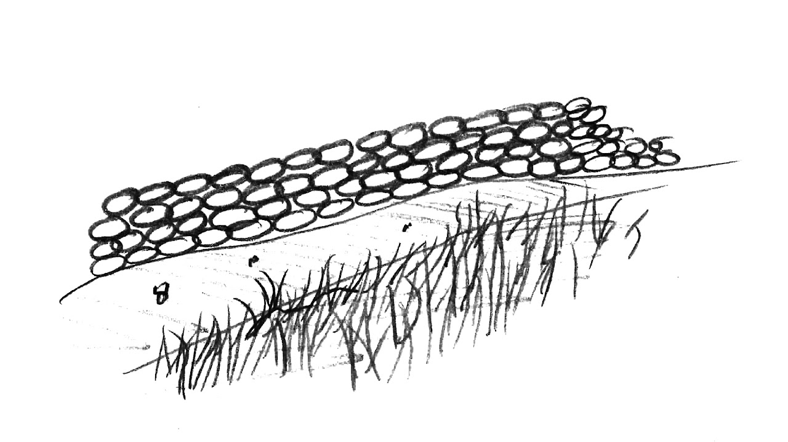

Příprava hry
Karty se rozdělí do balíčků podle typu (Mýtické a Předměty jsou na jednom balíčku) a
balíčky se
zamíchají. Poté se balíčky položí doprostřed hrací plochy zadní stranou vzhůru. Hráč musí mít
povinně před sebou vyloženy karty: Postava, Povolání a Bytost (poté co ji získá).

Obecná pravidla
- Bonusy se přičítají v případě, že padne na kostce číslo shodné s číslem v kolonce Bonus. Bonus se uplatní tak, že si hráč přičte k hodu jedna (hodí na kostkách 5 a 3, v kolonce Bonus má čísla 2/3/5, tudíž výsledná hodnota hodu je 5+1 a 3+1, což je 10).
- Mýtické karty nelze obnovit, což znamená, že po jejich použití je hráč odloží na odhazovací hromádku Předmětů.
- Hodnotu karty Žolík lze přičíst k jakémukoli políčku, kromě Bonusů. Doba, po jakou se hodnota Žolíku přičítá je jedno kolo (nevztahuje se na Životy).
- V druhé fázi hry lze provést jen jednu možnost (Získání, nebo Zahození, nebo Oprava).
- Hráč unese (může mít v ruce) tolik karet, kolik je jeho výsledná Síla (Síla Postavy + Síla Povolání + Síla Bytosti).
Cíl hry:
Hráči si ho sami určí před začátkem hry, podle toho, jaké mají hráči časové možnosti.Pár příkladů pro inspiraci:
Přežít 10/15/20 kol
Porazit 5/10 Bytostí
Zůstat poslední ve hře, což znamená porazit všechny ostatní hráče
Mít v ruce všechny Žolíky
Kdo první získá Draka
Průběh hry
-
Otáčení karty Krajina
Na začátku každého kola se určí, kde se hráči nachází otočením karty Krajina. Hráči si aktualizují hodnoty (Síla, Životy, …) svých Postav podle této karty. -
Předmět
- Získání Lízne si 2 karty a jednu z nich si vybere (druhou zahodí).
- Zahození V případě, že bude hráč chtít uvolnit místo (Krajina mu ubrala Sílu, a už ten předmět neunese, …) může hráč odhodit 1 kartu na odhazovací hromádku u Předmětů.
- Oprava Hráč si může opravit 1 Předmět.
-
Výměna Bytosti
Hráč si může jednou za 5 kol vyměnit kartu Bytosti za jinou, kterou získal. Získá-li hráč svou první Bytost, může ji vyložit hned. Po vyložení Bytosti se její Síla, Životy a Bonusy přičtou k Postavě hráče (první zemře Bytost a až poté Postava). -
Použití Předmětu
- Hráč může, ale nemusí, použít Předměty, co má v ruce. Má možnost vyložit (použít) i více Předmětů.
- Po použití Předmětu (i v Boji s Bytostí/Protihráčem) nechá předmět vyložený, ale otočí jej zadní stranou vzhůru, což znamená, že je nutno jej opravit a nejde jej, dokud nebude opraven, použít. V 2.Fázi hry jej lze opravit, nebo zahodit. Předměty čekající na opravu, se pořád počítají, jako kdyby je měl v ruce (musí dodržet počet karet v ruce podle jeho Síly).
- Hráč může bojovat se spoluhráči, nebo si dobíjet životy (Lék, Ovoce, …) podle toho, co má za Předměty k dispozici.
Je nejprve nutno zabít vyloženou Bytost, až poté lze zabít hráče. Napadený i Útočník mohou ze souboje utéct použitím karty Útěk. Kartu Útěk lze použít v jakékoli fázi Souboje.
Fáze Souboje:-
Hráč určí, na koho bude útočit.
Může si vybrat kteréhokoliv hráče. -
Útočník i Napadený vyloží Předměty, které použijí k boji.
V tuto chvíli Útočník i Napadený vyloží libovolný počet Předmětů, a mohou tak použít jejich Bonusy po hodu kostkou. -
Útok
Hráč může provést jen jeden Útok za kolo. Útočník si hodí kostkou a určí výsledný Útok (hodnota hodu + Bonusy vyložených Předmětů), poté stejným způsobem napadený určí velikost své Obrany. -
Výsledek Souboje
-
Obrana je větší než Útok nebo Obrana je stejná jako Útok
Napadený se ubránil a nic se mu nestalo. -
Obrana je menší než Útok
Napadený si odečte tolik životů, o kolik převyšuje Útok protivníka jeho Obranu. Když je jeden z hráčů zabit (nezbyli mu žádné Životy), tak ten, kdo ho zabil, si vybere jeden z Předmětů protihráče (Bytost si od protihráče vzít nelze).
-
Obrana je větší než Útok nebo Obrana je stejná jako Útok
-
Boj s Bytostí
- Jediná možnost, jak získat Bytost. Není povinný. Hráči zachovávají pořadí hry (to znamená, že když Bytost porazí některý hráč, tak hráči v pořadí za ním již toto kolo Bytost získat nemohou). Hráč může z Boje s Bytostí utéct jen pomocí karty Útěk.
-
Průběh Boje:
-
Hráč vyloží Předměty, které použije k boji.
Může vyložit libovolný počet Předmětů, a může tak použít jejich Bonusy po hodu kostkou. -
Útok
Hráč si hodí kostkou a určí výsledný Útok (hodnota hodu + Bonusy vyložených Předmětů). Tuto hodnotu porovná s počtem životů Bytosti. -
Výsledek boje
-
Počet Životů je větší než Útok
Bytost se ubránila a utekla. Hráč si odečte tolik životů, o kolik převyšuje počet Životů Bytosti jeho Útok. Může bojovat další hráč, nebo jestli není nikdo další na řadě, tak se tato karta Bytosti vrátí dospod balíčku. -
Počet Životů je stejný jako Útok nebo je menší než Útok
Hráč porazil Bytost a může si ji vzít.Nemá-li hráč zatím žádnou bytost, může ji vyložit. Má-li ale již Bytost vyloženou, tak si Bytost nechá v ruce a musí počkat tak dlouho, aby doba mezi výměnami Bytostí byla minimálně 5 kol (vyložil-li Bytost ve 2. kole, tak ji může vyměnit až v 7. kole, i kdyby v 5. kole získal další).Limit počtu karet v ruce (Síla) se na karty Bytostí nevztahuje.
-
Počet Životů je větší než Útok
-
Hráč vyloží Předměty, které použije k boji.